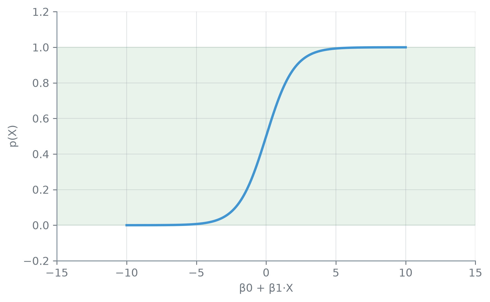
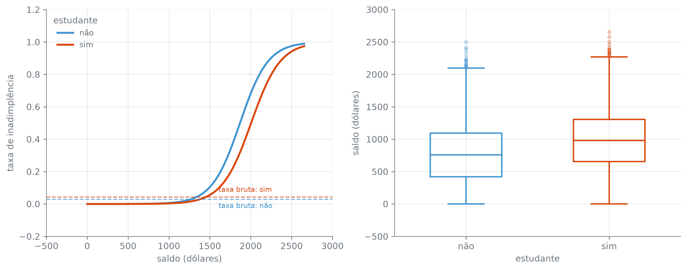

grade_z = np.linspace(-10, 10, 400)
p_z = np.exp(grade_z) / (1 + np.exp(grade_z))
p_extremo_baixo = float(p_z.min())
p_extremo_alto = float(p_z.max())
f"{p_extremo_baixo:.6f}", f"{p_extremo_alto:.6f}"('0.000045', '0.999955')Esta seção corresponde às seções 4.3.1, 4.3.2, 4.3.3 e 4.3.4 de James et al. (2023).
A seção anterior deixou a curva em S pronta, sem dizer de onde ela vem nem como um coeficiente se lê nela. A regressão logística resolve as duas coisas: ajusta essa curva a dado real, e dá um coeficiente por preditor — só que lido de um jeito diferente do que o capítulo 8 ensinou para a reta.
Para um preditor \(X\) e coeficientes \(\beta_0\) e \(\beta_1\), a regressão logística modela a probabilidade como
\[ p(X) = \frac{e^{\beta_0 + \beta_1 X}}{1 + e^{\beta_0 + \beta_1 X}}. \]
O denominador é sempre o numerador mais 1, e os dois são positivos para qualquer \(\beta_0\), \(\beta_1\) e \(X\) reais — a fração fica presa em (0, 1) pela forma da conta, não pelo ajuste. É essa propriedade, e não o valor de nenhum coeficiente, que resolve o problema da seção anterior.
('0.000045', '0.999955')Em \(\beta_0 + \beta_1 X = -10\), a curva vale 0,000045; em \(+10\), vale 0,999955 — perto das bordas de [0, 1], mas sem nunca as tocar, por mais que \(\beta_0 + \beta_1 X\) se afaste de zero.

(-10.6513, 0.0055)C=np.inf desliga a penalização que o LogisticRegression aplica por padrão, deixando o ajuste livre para maximizar a verossimilhança sem encolher nenhum coeficiente. Sobre saldo sozinho, o ajuste dá intercepto -10,6513 e coeficiente 0,0055.
\[ \log\left(\frac{p(X)}{1-p(X)}\right) = \beta_0 + \beta_1 X. \]
Um aumento de uma unidade em \(X\) soma \(\beta_1\) à log-chance de \(Y = 1\), não à probabilidade \(p(X)\). Como a relação entre \(p(X)\) e \(X\) não é uma reta, o efeito de \(X\) sobre a probabilidade depende de onde \(X\) já está — diferente da regressão linear do capítulo 8, em que \(\beta_1\) valia o mesmo incremento em qualquer ponto.
Sobre saldo, cada dólar a mais soma sempre os mesmos 0,0055 à log-chance de inadimplência — mas o efeito sobre a probabilidade não é constante:
(0.58, 58.58)Para um saldo de mil dólares, a probabilidade prevista de inadimplência é 0,58%; para um saldo de dois mil dólares — o dobro do primeiro —, ela não dobra: sobe para 58,58%. É essa não linearidade que a curva em S carrega, e que a reta da seção anterior não tinha como representar.
estudantes = base[base["estudante"] == "sim"]
nao_estudantes = base[base["estudante"] == "não"]
taxa_estudante = float((estudantes["inadimplente"] == "sim").mean())
taxa_nao_estudante = float((nao_estudantes["inadimplente"] == "sim").mean())
round(taxa_estudante * 100, 2), round(taxa_nao_estudante * 100, 2)(4.31, 2.92)Entre estudantes, 4,31% ficam inadimplentes; entre os demais, 2,92% — olhado sozinho, o estudante é o cliente mais arriscado dos dois.
0.4014Um modelo logístico que usa só estudante como preditor confirma essa leitura: o coeficiente sai positivo, 0,4014 — ser estudante soma à log-chance de inadimplência.
X_multiplo = base[["saldo", "renda"]].copy()
X_multiplo["estudante_sim"] = (base["estudante"] == "sim").astype(int)
modelo_multiplo = LogisticRegression(C=np.inf, max_iter=10000).fit(X_multiplo, y)
coeficientes_multiplo = pd.Series(modelo_multiplo.coef_[0], index=modelo_multiplo.feature_names_in_)
intercepto_multiplo = float(modelo_multiplo.intercept_[0])
(
round(intercepto_multiplo, 4),
round(float(coeficientes_multiplo["saldo"]), 6),
f"{coeficientes_multiplo['renda']:.3e}",
round(float(coeficientes_multiplo["estudante_sim"]), 4),
)(-10.869, 0.005737, '3.033e-06', -0.6468)Juntar saldo, renda e estudante na mesma equação reverte o sinal: o coeficiente de estudante cai para -0,6468. renda quase não muda a conta (3,033e-06), mas saldo (0,005737) e estudante pesam — e o de estudante trocou de sinal por completo. É o mesmo tipo de reviravolta que a seção 8.3 viu no coeficiente de jornal: positivo sozinho, outra coisa depois que os preditores certos entram na mesma equação.
(987.82, 771.77)A explicação está no saldo: em média, um estudante deve 987,82 dólares no cartão; um não estudante, 771,77 — 216,05 dólares a menos.
(2.7748, 0.0405, -0.2948)Coeficientes em dólares, em dólares e num 0/1 não se comparam crus; multiplicar cada um pelo desvio-padrão do próprio preditor põe os três na mesma escala — log-chance por um desvio-padrão de variação. Nessa escala, saldo pesa 2,7748, contra 0,0405 de renda e -0,2948 de estudante: é saldo, não estudante, o preditor que mais empurra a inadimplência para cima, e é essa desvantagem que um estudante típico já carrega ao entrar na conta múltipla — o coeficiente isolado de estudante não separa os dois efeitos: sozinho, ele confunde o efeito de ser estudante com o efeito de, em média, dever mais.
modelo_saldo_estudante = LogisticRegression(C=np.inf, max_iter=10000).fit(
estudantes[["saldo"]], (estudantes["inadimplente"] == "sim").astype(int)
)
modelo_saldo_nao_estudante = LogisticRegression(C=np.inf, max_iter=10000).fit(
nao_estudantes[["saldo"]], (nao_estudantes["inadimplente"] == "sim").astype(int)
)
grade_saldo = np.linspace(base["saldo"].min(), base["saldo"].max(), 300)
grade_saldo_df = pd.DataFrame({"saldo": grade_saldo})
prob_estudante = modelo_saldo_estudante.predict_proba(grade_saldo_df)[:, 1]
prob_nao_estudante = modelo_saldo_nao_estudante.predict_proba(grade_saldo_df)[:, 1]
estudante_sempre_abaixo = bool((prob_estudante < prob_nao_estudante).all())
faixa_comum_min = float(max(estudantes["saldo"].min(), nao_estudantes["saldo"].min()))
faixa_comum_max = float(min(estudantes["saldo"].max(), nao_estudantes["saldo"].max()))
grade_comum_df = pd.DataFrame({"saldo": np.linspace(faixa_comum_min, faixa_comum_max, 300)})
prob_estudante_comum = modelo_saldo_estudante.predict_proba(grade_comum_df)[:, 1]
prob_nao_estudante_comum = modelo_saldo_nao_estudante.predict_proba(grade_comum_df)[:, 1]
abaixo_na_faixa_comum = bool((prob_estudante_comum < prob_nao_estudante_comum).all())
base_decis = base.copy()
base_decis["decil_saldo"] = pd.qcut(base_decis["saldo"], 10)
taxas_por_decil = (
base_decis.groupby(["decil_saldo", "estudante"], observed=True)["inadimplente"]
.apply(lambda s: (s == "sim").mean())
.unstack("estudante")
)
estudante_nunca_acima_no_decil = bool((taxas_por_decil["sim"] <= taxas_por_decil["não"]).all())
(
estudante_sempre_abaixo,
round(faixa_comum_min, 2),
round(faixa_comum_max, 2),
abaixo_na_faixa_comum,
estudante_nunca_acima_no_decil,
)(True, 0.0, 2499.02, True, True)Dois modelos logísticos ajustados separadamente — um só com os estudantes, outro só com os não estudantes, cada um usando saldo como único preditor — mostram a curva do estudante abaixo da do não estudante em toda a grade: estudante_sempre_abaixo sai True. O mesmo vale restrito à faixa de saldo que os dois grupos de fato ocupam, de 0,00 a 2.499,02 dólares (abaixo_na_faixa_comum). O dado cru confirma isso sem depender de modelo nenhum: dividindo saldo em dez decis, a taxa observada de inadimplência do estudante não passa a do não estudante em nenhum dos dez (estudante_nunca_acima_no_decil).
fig, (ax1, ax2) = plt.subplots(1, 2, figsize=(11, 4.4))
ax1.plot(grade_saldo, prob_nao_estudante, color="C0", linewidth=2.2, label="não")
ax1.plot(grade_saldo, prob_estudante, color="C1", linewidth=2.2, label="sim")
ax1.axhline(taxa_nao_estudante, color="C0", linestyle="--", linewidth=1.2, alpha=0.7)
ax1.axhline(taxa_estudante, color="C1", linestyle="--", linewidth=1.2, alpha=0.7)
ax1.annotate(
"taxa bruta: não", xy=(grade_saldo[-1], taxa_nao_estudante),
xytext=(-98, -10), textcoords="offset points", fontsize=8, color="C0",
)
ax1.annotate(
"taxa bruta: sim", xy=(grade_saldo[-1], taxa_estudante),
xytext=(-98, 6), textcoords="offset points", fontsize=8, color="C1",
)
ax1.set_xlabel("saldo (dólares)")
ax1.set_ylabel("taxa de inadimplência")
ax1.legend(title="estudante", loc="upper left")
for dados, posicao, cor in [(nao_estudantes["saldo"], 1, "C0"), (estudantes["saldo"], 2, "C1")]:
propriedades = dict(color=cor, linewidth=1.6)
ax2.boxplot(
dados, positions=[posicao], widths=0.5,
boxprops=propriedades, whiskerprops=propriedades,
capprops=propriedades, medianprops=propriedades,
flierprops=dict(markeredgecolor=cor, markersize=3, alpha=0.5),
)
ax2.set_xticks([1, 2])
ax2.set_xticklabels(["não", "sim"])
ax2.set_xlabel("estudante")
ax2.set_ylabel("saldo (dólares)")
plt.tight_layout()
plt.show()
A curva da esquerda e os decis contam a mesma história: em qualquer saldo, o estudante não é o cliente mais arriscado — é a curva laranja que fica embaixo, do primeiro ao último ponto da grade. As linhas tracejadas, que ignoram saldo e mostram só a taxa bruta de cada grupo, invertem essa ordem porque o estudante se concentra em saldos mais altos — a diferença de 216,05 dólares na média medida acima — puxando a média geral dele para cima mesmo com cada saldo individual sendo mais seguro.
prob_multiplo_todas = modelo_multiplo.predict_proba(X_multiplo)[:, 1]
mascara_estudante = X_multiplo["estudante_sim"] == 1
media_prob_estudante = float(prob_multiplo_todas[mascara_estudante].mean())
media_prob_nao_estudante = float(prob_multiplo_todas[~mascara_estudante].mean())
pd.DataFrame(
{
"prevista (média)": [media_prob_estudante, media_prob_nao_estudante],
"bruta": [taxa_estudante, taxa_nao_estudante],
},
index=["estudante", "não estudante"],
).round(6)| prevista (média) | bruta | |
|---|---|---|
| estudante | 0.043139 | 0.043139 |
| não estudante | 0.029195 | 0.029195 |
A média da probabilidade que o modelo múltiplo prevê para cada estudante, sobre o saldo e a renda que ele de fato tem, é 0,043139; a mesma média entre não estudantes é 0,029195 — e a tabela põe as duas ao lado da taxa bruta de cada grupo, iguais até a sexta casa decimal.